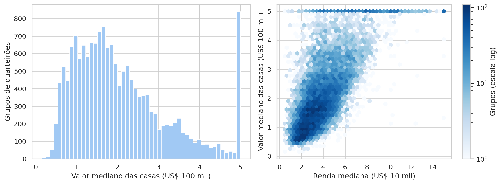
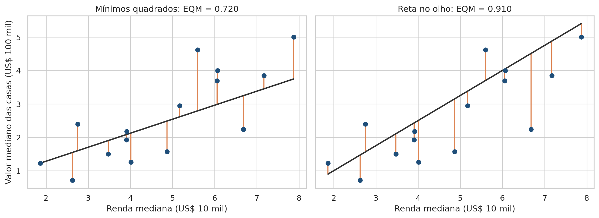
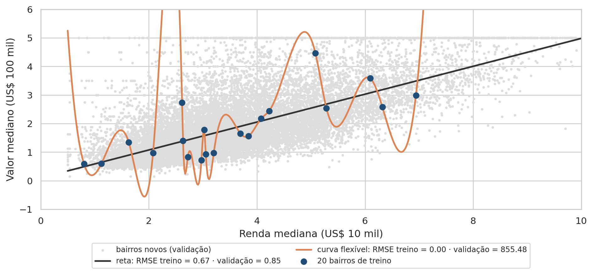
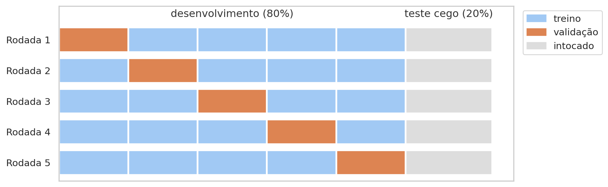
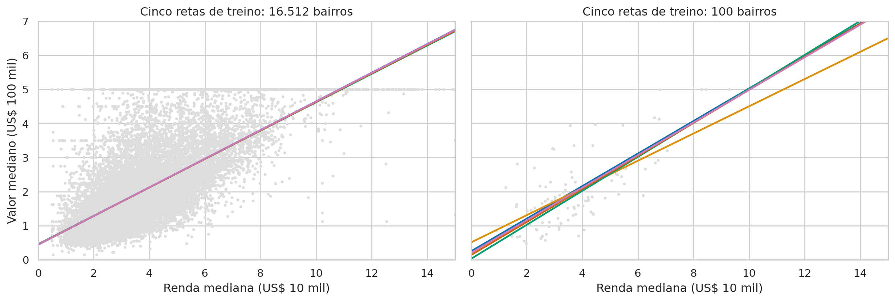
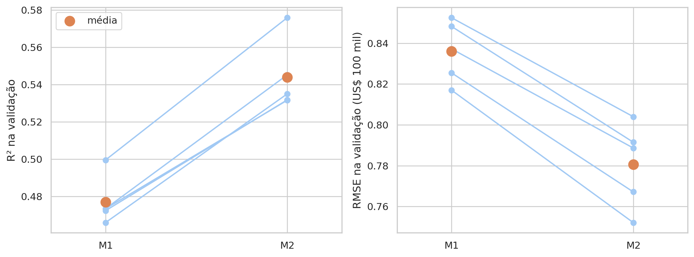
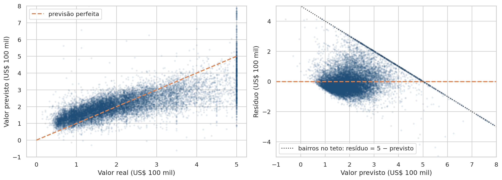

# Importa as bibliotecas e define o tema dos gráficos
import numpy as np
import pandas as pd
import matplotlib.pyplot as plt
import seaborn as sns
from matplotlib.patches import Patch
from scipy import stats
from scipy.interpolate import CubicSpline
from sklearn.dummy import DummyRegressor
from sklearn.linear_model import LinearRegression
from sklearn.metrics import (
mean_absolute_error,
mean_squared_error,
r2_score,
root_mean_squared_error,
)
from sklearn.model_selection import (
KFold,
cross_val_predict,
cross_validate,
train_test_split,
)
from sklearn.pipeline import make_pipeline
from sklearn.preprocessing import StandardScaler
sns.set_theme(style="whitegrid", palette="colorblind")Aula 10 - Regressão Linear
Motivação
Um banco precisa estimar o valor das casas de um bairro antes de aprovar um lote de financiamentos. Não existe avaliação recente desse bairro, só dados do censo: a renda das famílias, a idade das casas, o número de cômodos, a população. Temos os mesmos dados para outros 20 mil bairros. Dá para construir, a partir deles, uma regra que estime o valor de um bairro que ainda não vimos? E como saber, antes de usar essa regra, o quanto ela vai errar?
Até aqui, o curso fez perguntas de inferência: uma diferença ou uma associação observada na amostra é real ou fruto do acaso? Esta aula abre o bloco de aprendizado de máquina, e a pergunta muda de natureza. Saber que renda e valor estão relacionados já não basta. Queremos usar essa relação para prever, e um modelo de previsão se julga pelo erro que comete em dados novos, não nos dados com que aprendeu.
Começamos pela regressão linear simples, da correlação até a reta e o seu erro. Em seguida, mostramos por que o erro medido nos próprios dados de ajuste engana e montamos um protocolo de validação, com teste cego e validação cruzada. A última parte trata da regressão múltipla e do diagnóstico pelos resíduos e termina com um panorama da regularização e de outras famílias de modelos de regressão.
Quanto o modelo vai errar em casas que ele nunca viu?
Objetivos de aprendizagem
Ao final deste roteiro, você será capaz de:
- Calcular e interpretar o intercepto e a inclinação de uma regressão linear simples.
- Medir o erro de um modelo com MAE, RMSE e \(R^2\) e compará-lo com um modelo de referência.
- Explicar por que o erro de treino é otimista e aplicar o protocolo de teste cego com validação cruzada de 5 dobras.
- Ajustar e comparar uma regressão linear múltipla nas mesmas dobras, interpretando seus coeficientes.
- Diagnosticar um modelo pelos gráficos de resíduos.
- Explicar o funcionamento da regularização (Ridge, Lasso e ElasticNet) e reconhecer a mesma ideia em outros modelos de IA.
Como usar este roteiro
A base California Housing está salva em california-housing/data/. Ela também pode ser baixada com sklearn.datasets.fetch_california_housing, mas a cópia local garante que todos usem exatamente os mesmos dados. Esta aula usa o scikit-learn pela primeira vez. Se ele ainda não estiver no seu ambiente, instale-o com pip install scikit-learn.
1. Preparando o ambiente
Começamos pelas bibliotecas. Do scikit-learn vêm as ferramentas de partição dos dados, os modelos, as etapas de pré-processamento e as métricas de erro:
1.1 Conhecendo a base
A base California Housing vem do censo norte-americano de 1990. Cada linha não é uma casa, e sim um grupo de quarteirões (block group), a menor unidade geográfica para a qual o censo publica dados, com cerca de 600 a 3.000 moradores. No roteiro, chamamos cada linha de “grupo” ou “bairro”.
A base vem com o scikit-learn. A cópia local em california-housing/data/ foi gerada uma única vez com o código abaixo, que não é executado no roteiro:
# Baixa a base pelo scikit-learn e salva a cópia local
from sklearn.datasets import fetch_california_housing
(
1 fetch_california_housing(as_frame=True)
.frame
.to_csv("california-housing/data/california_housing.csv", index=False)
)- 1
-
Na primeira execução,
fetch_california_housingbaixa os dados da internet e guarda uma cópia em~/scikit_learn_data.as_frame=Truedevolve os dados como tabela do pandas, e.framereúne os atributos e a respostaMedHouseVal.
Daqui em diante, lemos a cópia local:
# Carrega a base de grupos de quarteirões da Califórnia
housing = pd.read_csv("california-housing/data/california_housing.csv")
housing.head()| MedInc | HouseAge | AveRooms | AveBedrms | Population | AveOccup | Latitude | Longitude | MedHouseVal | |
|---|---|---|---|---|---|---|---|---|---|
| 0 | 8.3252 | 41.0 | 6.984127 | 1.023810 | 322.0 | 2.555556 | 37.88 | -122.23 | 4.526 |
| 1 | 8.3014 | 21.0 | 6.238137 | 0.971880 | 2401.0 | 2.109842 | 37.86 | -122.22 | 3.585 |
| 2 | 7.2574 | 52.0 | 8.288136 | 1.073446 | 496.0 | 2.802260 | 37.85 | -122.24 | 3.521 |
| 3 | 5.6431 | 52.0 | 5.817352 | 1.073059 | 558.0 | 2.547945 | 37.85 | -122.25 | 3.413 |
| 4 | 3.8462 | 52.0 | 6.281853 | 1.081081 | 565.0 | 2.181467 | 37.85 | -122.25 | 3.422 |
| Coluna | Significado | Unidade |
|---|---|---|
MedInc |
Renda mediana das famílias do grupo | Dezenas de milhares de dólares (US$ 10 mil) |
HouseAge |
Idade mediana das casas | Anos |
AveRooms |
Número médio de cômodos por domicílio | Cômodos |
AveBedrms |
Número médio de quartos por domicílio | Quartos |
Population |
População do grupo | Pessoas |
AveOccup |
Número médio de moradores por domicílio | Pessoas |
Latitude, Longitude |
Posição geográfica do grupo | Graus |
MedHouseVal |
Valor mediano das casas, a variável que queremos prever | Centenas de milhares de dólares (US$ 100 mil) |
Antes de qualquer modelo, inspecionamos a base:
# Resumo das nove colunas
housing_summary = (
housing
.describe()
.T
.round(2)
)
housing_summary| count | mean | std | min | 25% | 50% | 75% | max | |
|---|---|---|---|---|---|---|---|---|
| MedInc | 20640.0 | 3.87 | 1.90 | 0.50 | 2.56 | 3.53 | 4.74 | 15.00 |
| HouseAge | 20640.0 | 28.64 | 12.59 | 1.00 | 18.00 | 29.00 | 37.00 | 52.00 |
| AveRooms | 20640.0 | 5.43 | 2.47 | 0.85 | 4.44 | 5.23 | 6.05 | 141.91 |
| AveBedrms | 20640.0 | 1.10 | 0.47 | 0.33 | 1.01 | 1.05 | 1.10 | 34.07 |
| Population | 20640.0 | 1425.48 | 1132.46 | 3.00 | 787.00 | 1166.00 | 1725.00 | 35682.00 |
| AveOccup | 20640.0 | 3.07 | 10.39 | 0.69 | 2.43 | 2.82 | 3.28 | 1243.33 |
| Latitude | 20640.0 | 35.63 | 2.14 | 32.54 | 33.93 | 34.26 | 37.71 | 41.95 |
| Longitude | 20640.0 | -119.57 | 2.00 | -124.35 | -121.80 | -118.49 | -118.01 | -114.31 |
| MedHouseVal | 20640.0 | 2.07 | 1.15 | 0.15 | 1.20 | 1.80 | 2.65 | 5.00 |
O resumo traz três detalhes que voltam ao longo da aula. Não há valores ausentes: as nove colunas têm 20.640 observações, e nada precisará ser imputado. Há valores extremos. AveRooms chega a 141,9 cômodos por domicílio, e AveOccup, a 1.243 moradores por domicílio. São grupos com poucos domicílios, como alojamentos, presídios ou áreas de veraneio, e eles deixam as distribuições dessas colunas fortemente assimétricas.
E há tetos. O máximo de MedHouseVal é exatamente 5,0, e o de HouseAge, exatamente 52. O censo registrou como “500 mil ou mais” todo valor acima de US$ 500 mil e como “52 ou mais” toda idade acima de 52 anos. Dados assim se chamam censurados: sabemos que o valor verdadeiro é pelo menos 5,0, mas não sabemos quanto.
1.2 Antes de tudo: o teste cego
Qualquer decisão tomada olhando para os dados que servirão de avaliação provoca vazamento, e a avaliação deixa de medir o desempenho em dados realmente novos. Para evitar isso, o aprendizado de máquina segue um protocolo. Logo depois de carregar os dados, separamos uma parte deles e a guardamos, intocada, até o fim do roteiro.
Essa parte, com 20% das linhas, é o teste cego. Os 80% restantes formam o conjunto de desenvolvimento, onde exploramos os dados e ajustamos e comparamos modelos. O teste cego só será aberto uma vez, no fim, para medir o desempenho do modelo escolhido.
# Separa 20% das linhas como teste cego, antes de qualquer análise
1X = housing.drop(columns="MedHouseVal")
y = housing["MedHouseVal"]
X_dev, X_test, y_dev, y_test = train_test_split(
2 X, y, test_size=0.20, random_state=42
)
3dev = X_dev.assign(MedHouseVal=y_dev)
print(f"Desenvolvimento: {len(X_dev)} linhas · Teste cego: {len(X_test)} linhas")- 1
-
Por convenção,
X(maiúsculo) é a tabela de atributos, as variáveis usadas para prever, ey(minúsculo) é a variável resposta, aquilo que queremos prever. - 2
-
train_test_splitsorteia quais linhas vão para cada conjunto. Fixarrandom_statefaz o sorteio sair igual toda vez que o roteiro é executado. - 3
-
devjunta atributos e resposta do conjunto de desenvolvimento em uma única tabela, útil para os gráficos.
Desenvolvimento: 16512 linhas · Teste cego: 4128 linhasDaqui em diante, toda exploração usa apenas dev, X_dev e y_dev.
2. Recapitulação: o que precisamos lembrar
2.1 Da correlação à reta
O coeficiente de correlação de Pearson, \(r\), mede o quanto os pontos de um gráfico de dispersão seguem uma reta. Vai de −1 a +1, não tem unidade e é simétrico: a correlação entre renda e valor é a mesma que entre valor e renda.
A média é o valor que minimiza a soma dos quadrados das distâncias aos dados. Sem nenhuma informação sobre um bairro, o melhor palpite para o seu valor, nesse sentido, seria a média de todos os bairros. Esse palpite ingênuo vai servir de referência, porque um modelo só é útil se errar menos que ele.
2.2 Explicar ou prever?
Uma regressão pode servir a dois propósitos, e cada um pede cuidados próprios:
| Inferência | Previsão | |
|---|---|---|
| Pergunta | A relação existe? Qual o seu tamanho? | Quanto vale o próximo bairro? |
| Foco | Os coeficientes e sua incerteza | As previsões e seu erro |
| Avaliação | p-valor, intervalo de confiança | Erro em dados que o modelo não viu |
| Risco principal | Confundir associação com causa | Confundir erro de treino com erro real |
Os dois usam o mesmo modelo. A previsão, porém, traz uma exigência nova: o erro precisa ser medido em dados que ficaram fora do ajuste. É disso que trata esta aula.
2.3 O vocabulário do aprendizado de máquina
Alguns termos vão aparecer o tempo todo. No aprendizado supervisionado, o modelo aprende com exemplos cuja resposta é conhecida; aqui, cada bairro do desenvolvimento traz os atributos e o valor das casas. Quando a resposta é numérica, como esse valor, o problema é de regressão. Quando é uma categoria, como “sobreviveu” ou “não sobreviveu”, é de classificação.
Treinar, ou ajustar, um modelo é encontrar os seus parâmetros a partir dos dados, o que no scikit-learn se faz com o método .fit. Prever é aplicar o modelo treinado a novos atributos, com .predict. E generalização é a capacidade de errar pouco em dados que o modelo nunca viu.
3. Regressão linear simples, passo a passo
3.1 Olhando para os dados
Começamos pela relação mais intuitiva: bairros de renda mais alta têm casas mais caras? Antes do modelo, olhamos para a resposta e para a relação dela com a renda:
# Distribuição do valor das casas e relação com a renda
fig, axes = plt.subplots(1, 2, figsize=(12, 4.5))
axes[0].hist(dev["MedHouseVal"], bins=50, color="#A1C9F4", edgecolor="white")
axes[0].set(xlabel="Valor mediano das casas (US$ 100 mil)",
ylabel="Grupos de quarteirões")
hexes = axes[1].hexbin(dev["MedInc"], dev["MedHouseVal"], gridsize=45,
1 cmap="Blues", mincnt=1, bins="log")
fig.colorbar(hexes, ax=axes[1], label="Grupos (escala log)")
axes[1].set(xlabel="Renda mediana (US$ 10 mil)",
ylabel="Valor mediano das casas (US$ 100 mil)")
plt.tight_layout()
plt.show()- 1
-
Com mais de 16 mil pontos, um gráfico de dispersão comum vira uma mancha. O
hexbindivide o plano em hexágonos e pinta cada um conforme o número de grupos que caem nele. Com a cor em escala log, dá para enxergar tanto as regiões densas quanto as esparsas.

# Proporção de grupos no teto de 5,0
capped_share = (dev["MedHouseVal"] >= 5).mean()
print(f"Grupos no teto de 5,0: {capped_share:.1%}")Grupos no teto de 5,0: 4.9%A maioria dos bairros vale entre US$ 100 mil e US$ 250 mil, e a distribuição tem uma cauda longa à direita. No fim do histograma, uma barra isolada reúne cerca de 5% dos grupos: é o teto em 5,0. No painel da direita, esse teto vira uma linha horizontal de hexágonos que atravessa todas as faixas de renda. Esses bairros valem “5,0 ou mais”, e o modelo não tem como saber quanto mais.
O valor sobe com a renda de forma aproximadamente linear. Para uma mesma renda, porém, há bairros com valores muito diferentes. A renda explica parte da história, mas não toda.
3.2 O que é a “melhor” reta?
Uma reta é descrita por dois números:
\[ \hat{y} = \beta_0 + \beta_1 x \]
O intercepto \(\beta_0\) é a altura da reta quando \(x = 0\), e a inclinação \(\beta_1\) diz quanto \(\hat{y}\) muda quando \(x\) aumenta em uma unidade. O chapéu em \(\hat{y}\) indica uma previsão, e não o valor observado \(y\).
Em cada bairro, a diferença entre o valor observado e o previsto é o resíduo:
\[ e_i = y_i - \hat{y}_i \]
Um resíduo positivo indica que o bairro vale mais do que a reta prevê; um negativo, que vale menos. Entre todas as retas possíveis, o método de mínimos quadrados ordinários (ordinary least squares, OLS) escolhe a que deixa a soma dos quadrados dos resíduos o menor possível:
\[ \text{SQ}_{\text{res}} = \sum_{i=1}^{n} e_i^2 = \sum_{i=1}^{n} (y_i - \beta_0 - \beta_1 x_i)^2 \]
Por que o quadrado? Porque ele impede que resíduos positivos e negativos se cancelem e dá mais peso aos erros grandes. Há também uma vantagem prática: a reta ótima tem fórmula fechada, sem tentativa e erro.
3.3 Ajustando a reta com o scikit-learn
Não é preciso fazer essa minimização à mão. O scikit-learn faz isso por nós e organiza todos os modelos em torno da mesma interface, de modo que o que se aprende com a regressão linear vale para o resto do bloco de aprendizado de máquina:
# Reta de mínimos quadrados ajustada com o scikit-learn
1m1 = LinearRegression()
2m1.fit(X_dev[["MedInc"]], y_dev)
3print(f"β0 = {m1.intercept_:.4f} · β1 = {m1.coef_[0]:.4f}")
new_incomes = pd.DataFrame({"MedInc": [2, 4, 8]})
4m1.predict(new_incomes)- 1
- Criar o objeto só define o tipo de modelo. Nenhum cálculo é feito ainda.
- 2
-
.fit(X, y)ajusta o modelo e encontra os coeficientes que minimizam \(\text{SQ}_{\text{res}}\). Os colchetes duplos emX_dev[["MedInc"]]mantêm uma tabela de uma coluna, e não uma Series. O scikit-learn sempre espera os atributos em formato de tabela, mesmo quando há um só. - 3
-
Depois do ajuste, os parâmetros ficam em atributos terminados em
_:intercept_guarda \(\beta_0\), ecoef_, a lista dos \(\beta\) de cada atributo. - 4
-
.predict(X)aplica a reta a novos atributos, aqui três bairros com rendas medianas de US$ 20 mil, US$ 40 mil e US$ 80 mil.
β0 = 0.4446 · β1 = 0.4193array([1.28327428, 2.12195127, 3.79930524])O padrão criar → .fit → .predict se repete em árvores de decisão, florestas aleatórias, redes neurais e todos os outros modelos do scikit-learn.
Vamos chamar esta reta de M1, o modelo simples, que usa só a renda. Mais adiante, ela será comparada com o M2, que usa seis atributos.
Na regressão simples, a solução da minimização liga a reta à correlação de Pearson:
\[ \beta_1 = r \cdot \frac{s_y}{s_x} \qquad\qquad \beta_0 = \bar{y} - \beta_1 \bar{x} \]
A inclinação é a correlação convertida para as unidades dos dados. O \(r\) diz quão alinhados estão os pontos, e a razão \(s_y / s_x\) entre os desvios-padrão traduz “desvios-padrão de \(x\)” em “unidades de \(y\)”. O intercepto faz a reta passar pelo ponto médio \((\bar{x}, \bar{y})\).
3.4 O que a minimização faz
Para ver o que significa minimizar os quadrados, sorteamos 15 bairros e comparamos os resíduos de duas retas. À esquerda está a reta ajustada pelo scikit-learn; à direita, uma reta traçada no olho, mais inclinada. Os segmentos laranja são os resíduos, e o título de cada painel traz o erro quadrático médio (EQM, ou MSE em inglês), a média dos quadrados dos resíduos:
# Resíduos de 15 grupos em relação à reta ajustada e a uma reta no olho
sample = dev.sample(15, random_state=3)
income_grid = pd.DataFrame(
{"MedInc": np.linspace(sample["MedInc"].min(), sample["MedInc"].max(), 100)}
)
lines = {
"Mínimos quadrados": lambda df: m1.predict(df[["MedInc"]]),
1 "Reta no olho": lambda df: -0.5 + 0.75 * df["MedInc"],
}
fig, axes = plt.subplots(1, 2, figsize=(12, 4.5), sharey=True)
for ax, (name, predict) in zip(axes, lines.items()):
fitted = predict(sample)
ax.vlines(sample["MedInc"], fitted, sample["MedHouseVal"],
2 color="#DD8452", linewidth=1.5)
ax.scatter(sample["MedInc"], sample["MedHouseVal"], color="#1F4E79", zorder=3)
ax.plot(income_grid["MedInc"], predict(income_grid), color="#333333", linewidth=2)
3 mse = mean_squared_error(sample["MedHouseVal"], fitted)
ax.set(title=f"{name}: EQM = {mse:.3f}", xlabel="Renda mediana (US$ 10 mil)")
axes[0].set_ylabel("Valor mediano das casas (US$ 100 mil)")
plt.tight_layout()
plt.show()- 1
- Cada reta é guardada como uma função que recebe uma tabela e devolve as previsões, para que o mesmo laço desenhe as duas. A reta no olho não é ajustada: escolhemos à mão um intercepto de −0,5 e uma inclinação de 0,75, só para comparação.
- 2
-
vlinesdesenha, para cada bairro, um segmento vertical entre o valor previsto pela reta e o valor observado: o resíduo. - 3
-
mean_squared_errorcalcula a média dos quadrados dos resíduos. Minimizar essa média é o mesmo que minimizar a soma \(\text{SQ}_{\text{res}}\).

A reta no olho chega mais perto de alguns pontos, como o bairro de renda mais alta, mas se afasta muito de outros, como o de renda 6,7 e valor 2,2. Elevados ao quadrado, esses resíduos grandes dominam a média. A reta de mínimos quadrados distribui os erros de modo a minimizar o total, e foi ajustada com os 16.512 bairros do desenvolvimento, não só com estes 15.
3.5 Interpretando os coeficientes
A reta ajustada é:
\[ \widehat{\text{MedHouseVal}} = 0{,}445 + 0{,}419 \times \text{MedInc} \]
Pela inclinação, cada unidade a mais de renda mediana, ou seja, US$ 10 mil a mais por ano, está associada a 0,419 unidade a mais no valor mediano das casas, cerca de US$ 41,9 mil. Um bairro com renda de US$ 40 mil tem valor previsto de \(0{,}445 + 0{,}419 \times 4 \approx 2{,}12\), ou US$ 212 mil.
O intercepto é, geometricamente, o valor previsto para um bairro de renda zero: US$ 44,5 mil. Só que nenhum bairro da base tem renda perto de zero (a menor é 0,5), então esse número é uma extrapolação sem leitura prática. Ele serve para posicionar a reta, não para ser interpretado.
Dois cuidados valem para qualquer coeficiente. O primeiro é que ele descreve associação, e não causa. \(\beta_1\) mostra como o valor das casas varia entre bairros de rendas diferentes. Não diz que aumentar a renda das famílias de um bairro valorizaria as casas em US$ 41,9 mil. O segundo é que a reta foi aprendida com rendas entre 0,5 e 15, e fora desse intervalo nada garante que a relação continue linear.
E o p-valor de \(\beta_1\)?
A regressão também pode ser lida como um teste de hipóteses, com \(H_0: \beta_1 = 0\), isto é, sem relação linear entre renda e valor. O stats.linregress do SciPy devolve, além dos coeficientes, o erro-padrão da inclinação e o p-valor:
# Inclinação, erro-padrão e p-valor da regressão simples
slope_test = stats.linregress(dev["MedInc"], dev["MedHouseVal"])
print(f"β1 = {slope_test.slope:.4f} · erro-padrão = {slope_test.stderr:.4f} · "
f"p = {slope_test.pvalue:.1e}")β1 = 0.4193 · erro-padrão = 0.0034 · p = 0.0e+00O teste divide o sinal pelo ruído, e aqui a inclinação é mais de cem vezes maior que o seu erro-padrão. O p-valor fica praticamente em zero, e o teste equivale ao da correlação de Pearson. Ele responde se existe relação linear. Com 16 mil bairros, a resposta é sim, sem dúvida.
Isso não diz se a reta prevê bem. Um \(\beta_1\) altamente significativo pode conviver com previsões ruins, e é para essa segunda pergunta que servem as métricas da próxima seção.
3.6 Medindo o erro
Quanto a reta erra? Três métricas resumem os resíduos, cada uma à sua maneira:
| Métrica | Fórmula | Leitura |
|---|---|---|
| MAE (erro absoluto médio) | \(\frac{1}{n}\sum \lvert e_i \rvert\) | Erro típico, na unidade de \(y\). Trata todos os erros igualmente |
| RMSE (raiz do erro quadrático médio) | \(\sqrt{\frac{1}{n}\sum e_i^2}\) | Também na unidade de \(y\), mas pesa mais os erros grandes. É a métrica que o OLS minimiza |
| \(R^2\) (coeficiente de determinação) | \(1 - \frac{\text{SQ}_{\text{res}}}{\text{SQ}_{\text{tot}}}\) | Fração da variação de \(y\) explicada pelo modelo. Não tem unidade |
No \(R^2\), \(\text{SQ}_{\text{tot}} = \sum (y_i - \bar{y})^2\) é a soma dos quadrados dos resíduos do modelo de referência, que prevê sempre a média. O \(R^2\) compara o modelo com esse palpite ingênuo: vale 0 quando o modelo não erra menos que a média e 1 quando acerta todos os pontos.
O scikit-learn já traz esse modelo de referência pronto. É o DummyRegressor, que ignora os atributos e prevê sempre a média. Geramos as previsões dele e do M1 nos próprios dados de ajuste:
# Previsões do modelo de referência e do M1 nos próprios dados de ajuste
1baseline = DummyRegressor(strategy="mean").fit(X_dev[["MedInc"]], y_dev)
predictions = {
"Referência (média)": baseline.predict(X_dev[["MedInc"]]),
"M1 (renda)": m1.predict(X_dev[["MedInc"]]),
}- 1
-
DummyRegressor(strategy="mean")segue a mesma interface.fite.predictde qualquer modelo, mas só “aprende” a média dey_dev.
E calculamos as três métricas para cada um:
# MAE, RMSE e R² de cada modelo
fit_metrics = (
pd.DataFrame(
{
name: {
"MAE": mean_absolute_error(y_dev, pred),
"RMSE": root_mean_squared_error(y_dev, pred),
"R²": r2_score(y_dev, pred),
}
for name, pred in predictions.items()
}
)
.T
.round(4)
)
fit_metrics| MAE | RMSE | R² | |
|---|---|---|---|
| Referência (média) | 0.9139 | 1.1562 | 0.000 |
| M1 (renda) | 0.6250 | 0.8361 | 0.477 |
Em média, o M1 erra o valor mediano de um bairro em cerca de US$ 62 mil, para mais ou para menos (MAE de 0,625). O modelo de referência erra US$ 91 mil. O RMSE do M1, de 0,84, sai maior que o MAE porque pesa mais os erros grandes, como os dos bairros no teto de 5,0. Diante do RMSE de 1,16 da referência, a renda reduz o erro típico de US$ 116 mil para US$ 84 mil.
O \(R^2\) de 0,48 indica que a renda explica cerca de 48% da variação do valor entre bairros. Os outros 52% ficam nos resíduos. A referência tem \(R^2 = 0\) por definição. Na regressão simples, o \(R^2\) é exatamente o quadrado da correlação de Pearson entre \(x\) e \(y\): \(0{,}691^2 \approx 0{,}477\).
Esses números têm um problema. Foram calculados nos mesmos bairros usados para ajustar a reta, como uma prova cujas respostas o modelo já viu. A próxima seção mostra por que isso é perigoso.
4. Por que o erro de treino engana
4.1 Um modelo que decora
Pense em um aluno que se prepara estudando só as questões das provas anteriores. Se ele entende a matéria, vai bem também em questões novas. Se apenas decora as respostas, tira nota máxima nas provas antigas e se perde na primeira questão diferente. A nota nas provas antigas não separa um aluno do outro. Só uma prova nova faz isso.
Com modelos acontece o mesmo. Chamamos de erro de treino o erro medido nos bairros usados no ajuste, e de erro de validação o erro medido em bairros que ficaram de fora. Suponha que houvesse só 20 bairros para treinar. Uma reta passa entre eles sem tocar a maioria e erra um pouco em cada um. Uma curva flexível o bastante, cheia de dobras, consegue passar exatamente por cima dos 20 pontos, e o erro de treino vai a zero. Parece perfeita, mas essa curva aprendeu também o ruído daqueles 20 bairros, as particularidades que não se repetem. Diante de um bairro novo, ela oscila entre os pontos que memorizou e dá previsões absurdas, sobretudo fora da faixa de renda que viu no treino.

Na figura, a reta passa no meio da nuvem e erra quase o mesmo nos 20 bairros de treino e nos bairros novos. A curva laranja acerta em cheio cada um dos 20 pontos, com erro de treino zero, mas se contorce entre eles. Em alguns trechos, como entre as rendas 2 e 2,6, chega a sair do gráfico, e depois do último ponto, perto da renda 7, dispara de vez. Nos bairros novos, o seu erro é cerca de mil vezes maior que o da reta.
Esse comportamento se chama sobreajuste (overfitting): o modelo aprende o ruído da amostra de treino junto com o padrão, e o ruído não se repete em dados novos. O contrário, um modelo simples demais para captar o padrão, é o subajuste (underfitting). A tabela compara os três cenários:
| Modelo | Erro de treino | Erro de validação | Diagnóstico |
|---|---|---|---|
| Simples demais | Alto | Alto | Subajuste: não captou o padrão |
| Na medida | Moderado | Moderado, próximo do de treino | Generaliza bem |
| Flexível demais | Muito baixo | Alto | Sobreajuste: decorou o ruído |
À medida que o modelo ganha flexibilidade, o erro de treino só cai. O de validação cai até certo ponto e, a partir daí, volta a subir. O equilíbrio entre os dois extremos é o dilema viés-variância. Modelos simples erram de forma sistemática, sempre para o mesmo lado em certas regiões (viés). Modelos flexíveis erram de forma instável: troque os 20 bairros de treino, e a curva muda por completo (variância).
O erro de treino, portanto, não serve para escolher modelos, porque sempre premia o mais flexível. É preciso medir o erro em dados que o modelo não viu.
4.2 Validação cruzada com 5 dobras
O teste cego já está guardado. Por que não usá-lo para comparar modelos? Para responder, vale separar as três tarefas que os dados cumprem em um projeto de aprendizado de máquina:
| Conjunto | Pergunta que responde | O que se decide com ele |
|---|---|---|
| Treino | Quais coeficientes descrevem melhor estes dados? | Os parâmetros do modelo, pelo .fit |
| Validação | Qual modelo, ou qual configuração, erra menos em dados novos? | A escolha entre modelos, atributos e hiperparâmetros |
| Teste | Quanto o modelo escolhido vai errar na prática? | Nada: ele só mede o resultado final |
Cada vez que comparamos dois modelos, testamos um atributo a mais ou ajustamos uma configuração, olhamos o erro de validação e ficamos com a opção que errou menos. O teste vem depois, quando não há mais nada a decidir, e serve para estimar o erro do modelo que saiu dessa escolha.
A ordem importa porque toda escolha feita olhando um conjunto de dados deixa o erro medido nele otimista. O erro de um modelo em uma amostra tem uma parte que reflete a sua qualidade e outra que é sorte, ou seja, o quanto aquela amostra em particular favoreceu o modelo. Ao comparar vários modelos e ficar com o que errou menos, escolhemos, em parte, o que teve mais sorte naquela amostra. Com dois modelos, o efeito é pequeno. Com dezenas, ele cresce, pelo mesmo motivo do problema dos múltiplos testes: quanto mais comparações, maior a chance de algum resultado parecer bom só por acaso.
Por isso, o erro do modelo vencedor no conjunto de validação tende a ser um pouco melhor do que o erro que ele terá na prática. Se o teste também participasse da escolha, sofreria do mesmo viés e deixaria de ser uma medida honesta. Mantido intocado até o fim, ele é o único conjunto em que o modelo escolhido é avaliado sem que nenhuma decisão tenha sido tomada a seu favor.
É como estudar com simulados: eles servem para descobrir onde você precisa melhorar, mas a nota que vale é a da prova, que você não viu antes.
Resta um problema prático. Se reservarmos mais uma fatia fixa dos dados só para validar, sobram menos bairros para treinar, e a escolha passa a depender de quais bairros caíram nessa fatia. A saída é criar avaliações dentro do próprio desenvolvimento, reaproveitando os mesmos dados.
A validação cruzada com \(k\) dobras (k-fold cross-validation) divide o desenvolvimento em \(k\) partes de tamanho parecido. Em cada rodada, uma parte faz o papel de validação e as outras \(k - 1\), o de treino. Ao fim das \(k\) rodadas, cada bairro terá sido usado exatamente uma vez para validar:
# Esquema do protocolo: teste cego e cinco rodadas de validação cruzada
fig, ax = plt.subplots(figsize=(10, 3.2))
for k in range(5):
for j in range(5):
ax.barh(k, 0.16, left=j * 0.16, color="#DD8452" if j == k else "#A1C9F4",
edgecolor="white", linewidth=2)
ax.barh(k, 0.2, left=0.8, color="#DDDDDD", edgecolor="white", linewidth=2)
ax.text(0.9, -0.75, "teste cego (20%)", ha="center", color="#333333")
ax.text(0.4, -0.75, "desenvolvimento (80%)", ha="center", color="#333333")
ax.set(yticks=range(5), yticklabels=[f"Rodada {k + 1}" for k in range(5)],
xticks=[], ylim=(4.6, -1.1))
ax.legend(handles=[Patch(color="#A1C9F4", label="treino"),
Patch(color="#DD8452", label="validação"),
Patch(color="#DDDDDD", label="intocado")],
loc="upper left", bbox_to_anchor=(1.01, 1))
ax.grid(False)
plt.tight_layout()
plt.show()
O resultado são cinco medidas de erro, e não uma. A média delas estima o erro em dados novos; o desvio-padrão mostra o quanto essa estimativa depende de quais bairros caíram em cada dobra. No scikit-learn, KFold define as dobras e cross_validate executa as cinco rodadas:
# Validação cruzada com 5 dobras para o M1
1kfold = KFold(n_splits=5, shuffle=True, random_state=42)
2scoring = {"rmse": "neg_root_mean_squared_error", "r2": "r2"}
cv_m1 = cross_validate(LinearRegression(), X_dev[["MedInc"]], y_dev, cv=kfold,
3 scoring=scoring, return_train_score=True)
folds_m1 = pd.DataFrame(
{
"r2_treino": cv_m1["train_r2"],
"r2_validacao": cv_m1["test_r2"],
4 "rmse_validacao": -cv_m1["test_rmse"],
},
index=pd.RangeIndex(1, 6, name="dobra"),
)
folds_m1.round(4)- 1
-
shuffle=Trueembaralha os bairros antes de dividi-los. Sem isso, as dobras seguiriam a ordem das linhas, que pode ter algum padrão, como a região. Orandom_statefixa o embaralhamento, e as mesmas dobras serão reutilizadas por todos os modelos da aula. - 2
-
O scikit-learn segue a convenção “quanto maior, melhor” para todas as métricas. Como um RMSE menor é melhor, ele devolve o RMSE com o sinal trocado, daí o prefixo
neg_. - 3
-
return_train_score=Trueguarda também o desempenho em cada conjunto de treino, para compará-lo com o da validação. Em cada rodada,cross_validatecria uma cópia nova do modelo, ajusta-a nos dados de treino e a avalia na validação. - 4
- Trocamos o sinal de volta para ler o RMSE na unidade original.
| r2_treino | r2_validacao | rmse_validacao | |
|---|---|---|---|
| dobra | |||
| 1 | 0.4779 | 0.4733 | 0.8525 |
| 2 | 0.4782 | 0.4723 | 0.8372 |
| 3 | 0.4714 | 0.4995 | 0.8170 |
| 4 | 0.4797 | 0.4659 | 0.8482 |
| 5 | 0.4778 | 0.4734 | 0.8255 |
O resumo das cinco dobras:
# Média e desvio-padrão das métricas nas cinco dobras
summary_m1 = (
folds_m1
.agg(["mean", "std"])
.round(4)
)
summary_m1| r2_treino | r2_validacao | rmse_validacao | |
|---|---|---|---|
| mean | 0.4770 | 0.4769 | 0.8361 |
| std | 0.0032 | 0.0130 | 0.0150 |
O \(R^2\) médio de validação fica em torno de 0,48, e o RMSE, em 0,84, praticamente os valores obtidos nos dados de ajuste. As médias do \(R^2\) de treino e de validação coincidem em 0,477. Ao contrário da curva que decora os 20 bairros, uma reta com um único atributo e 13 mil bairros por treino não tem flexibilidade para decorar nada, e fica longe do sobreajuste.
As dobras também são estáveis. O desvio-padrão do \(R^2\) passa pouco de 0,01, e o desempenho quase não muda com a divisão dos bairros.
4.3 Estabilidade dos coeficientes nas dobras
A validação cruzada também mostra se o próprio modelo muda de uma dobra para outra. Ajustamos uma reta em cada conjunto de treino e desenhamos as cinco juntas. Para comparar, repetimos o procedimento com só 100 bairros sorteados do desenvolvimento:
# Cinco retas de treino em cada base: todos os bairros e apenas 100 bairros
bases = {"16.512 bairros": dev, "100 bairros": dev.sample(100, random_state=0)}
fold_models = {
label: cross_validate(LinearRegression(), data[["MedInc"]], data["MedHouseVal"],
1 cv=kfold, return_estimator=True)["estimator"]
for label, data in bases.items()
}- 1
-
return_estimator=Truefaz ocross_validatedevolver também os cinco modelos ajustados, um por dobra, na chave"estimator". Cada um foi treinado sem a sua dobra de validação.
# Uma reta por dobra, desenhada sobre cada base
income_grid = pd.DataFrame({"MedInc": np.linspace(0, 15, 100)})
fig, axes = plt.subplots(1, 2, figsize=(13, 4.5), sharey=True)
for ax, (label, data) in zip(axes, bases.items()):
ax.scatter(data["MedInc"], data["MedHouseVal"], color="#DDDDDD", s=4)
for fold_model in fold_models[label]:
ax.plot(income_grid["MedInc"], fold_model.predict(income_grid), linewidth=1.8)
ax.set(title=f"Cinco retas de treino: {label}", xlabel="Renda mediana (US$ 10 mil)",
xlim=(0, 15), ylim=(0, 7))
axes[0].set_ylabel("Valor mediano (US$ 100 mil)")
plt.tight_layout()
plt.show()
A tabela mostra o menor e o maior valor de cada coeficiente entre as cinco dobras:
# Menor e maior coeficiente entre as cinco dobras de cada base
coef_range = (
pd.DataFrame(
[
{"base": label, "beta_0": model.intercept_, "beta_1": model.coef_[0]}
for label, models in fold_models.items()
for model in models
]
)
.groupby("base")[["beta_0", "beta_1"]]
.agg(["min", "max"])
.round(4)
)
coef_range| beta_0 | beta_1 | |||
|---|---|---|---|---|
| min | max | min | max | |
| base | ||||
| 100 bairros | 0.0258 | 0.5068 | 0.3999 | 0.4991 |
| 16.512 bairros | 0.4373 | 0.4547 | 0.4169 | 0.4212 |
Com 16.512 bairros, as cinco retas quase se sobrepõem, e a inclinação varia só entre 0,417 e 0,421. Com 100 bairros, o feixe se abre, e a inclinação de cada dobra passa a depender bastante de quais bairros caíram no treino. Quanto maior a amostra, menos a estimativa varia de uma amostra para outra.
Com a base completa, o M1 é estável, mas limitado. Tem pouca variância e muito viés, porque a renda, sozinha, deixa metade da variação sem explicação.
5. Regressão linear múltipla
A regressão múltipla estende a reta para vários atributos:
\[ \hat{y} = \beta_0 + \beta_1 x_1 + \beta_2 x_2 + \dots + \beta_p x_p \]
Com dois atributos, o modelo vira um plano. Com mais, vira um hiperplano, que não dá para desenhar, mas segue a mesma lógica. Os coeficientes continuam sendo escolhidos por mínimos quadrados, e o código só muda na lista de colunas.
5.1 O M2 nas mesmas dobras
Para que a comparação seja justa, o M2 é avaliado nas mesmas cinco dobras do M1, o que se garante reutilizando o objeto kfold. Em cada rodada, os dois modelos são treinados e validados nos mesmos bairros, e as diferenças passam a vir só dos modelos, não da sorte da divisão. É uma comparação pareada:
# M2: seis atributos, avaliados nas mesmas cinco dobras do M1
features_m2 = ["MedInc", "HouseAge", "AveRooms", "AveBedrms", "Population", "AveOccup"]
cv_m2 = cross_validate(LinearRegression(), X_dev[features_m2], y_dev, cv=kfold,
scoring=scoring, return_train_score=True)
comparison = pd.DataFrame(
{
"M1_r2": cv_m1["test_r2"],
"M2_r2": cv_m2["test_r2"],
"M1_rmse": -cv_m1["test_rmse"],
"M2_rmse": -cv_m2["test_rmse"],
},
index=pd.RangeIndex(1, 6, name="dobra"),
)A média e o desvio-padrão de cada métrica nas cinco dobras:
# Média e desvio-padrão de M1 e M2 nas cinco dobras
comparison_summary = (
comparison
.agg(["mean", "std"])
.round(4)
)
comparison_summary| M1_r2 | M2_r2 | M1_rmse | M2_rmse | |
|---|---|---|---|---|
| mean | 0.4769 | 0.5439 | 0.8361 | 0.7807 |
| std | 0.0130 | 0.0187 | 0.0150 | 0.0208 |
O gráfico liga, em cada dobra, o desempenho do M1 ao do M2:
# Desempenho pareado de M1 e M2 em cada dobra
fig, axes = plt.subplots(1, 2, figsize=(11, 4.2))
for ax, metric, label in zip(axes, ["r2", "rmse"],
["R² na validação", "RMSE na validação (US$ 100 mil)"]):
values = comparison[[f"M1_{metric}", f"M2_{metric}"]]
for _, row in values.iterrows():
1 ax.plot([0, 1], row.to_numpy(), color="#A1C9F4", marker="o", zorder=2)
ax.scatter([0, 1], values.mean(), color="#DD8452", s=120, zorder=3, label="média")
ax.set(xticks=[0, 1], xticklabels=["M1", "M2"], xlim=(-0.3, 1.3), ylabel=label)
axes[0].legend(loc="upper left")
plt.tight_layout()
plt.show()- 1
- Cada linha azul é uma dobra. Linhas paralelas indicam que o ganho do M2 é parecido em todas as divisões.

O M2 vence em todas as cinco dobras. O \(R^2\) sobe de cerca de 0,48 para 0,54, e o RMSE cai de 0,84 para 0,78, o que, em dinheiro, reduz o erro típico em cerca de US$ 6 mil por bairro. As linhas são quase paralelas: a dobra mais difícil para o M1 também é a mais difícil para o M2, e o ganho se repete em todas.
5.2 Lendo os coeficientes
Ajustamos o M2 em todo o desenvolvimento para examinar os coeficientes. Como os atributos têm unidades muito diferentes, de pessoas a cômodos, ajustamos também uma versão com os atributos padronizados pelo StandardScaler. Nela, cada coeficiente indica a mudança em \(y\) quando o atributo aumenta um desvio-padrão, e os coeficientes ficam comparáveis entre si:
# Coeficientes do M2 em unidades originais e padronizadas
m2 = LinearRegression().fit(X_dev[features_m2], y_dev)
1m2_scaled = make_pipeline(StandardScaler(), LinearRegression()).fit(
X_dev[features_m2], y_dev
)
coefficients = (
pd.DataFrame(
{
"original": m2.coef_,
2 "padronizado": m2_scaled[-1].coef_,
"correlacao_com_y": X_dev[features_m2].corrwith(y_dev),
},
index=features_m2,
)
.round(4)
)
coefficients- 1
-
make_pipelineencadeia etapas. OStandardScaleraprende a média e o desvio-padrão de cada coluna nos dados de ajuste e os padroniza, e a regressão é ajustada sobre o resultado. - 2
-
m2_scaled[-1]acessa a última etapa da pipeline, a regressão já ajustada.
| original | padronizado | correlacao_com_y | |
|---|---|---|---|
| MedInc | 0.5462 | 1.0400 | 0.6906 |
| HouseAge | 0.0168 | 0.2116 | 0.1037 |
| AveRooms | -0.2239 | -0.5346 | 0.1585 |
| AveBedrms | 1.1155 | 0.4832 | -0.0514 |
| Population | 0.0000 | 0.0263 | -0.0260 |
| AveOccup | -0.0046 | -0.0535 | -0.0220 |
Na regressão múltipla, cada coeficiente mede a associação de um atributo com \(y\) mantidos constantes os demais atributos do modelo. É aí que ela difere da regressão simples.
Veja MedInc. Entre bairros com a mesma idade das casas, o mesmo número de cômodos e de quartos, a mesma população e a mesma ocupação, US$ 10 mil a mais de renda estão associados a US$ 54,6 mil a mais no valor. É o atributo de maior peso: um desvio-padrão de renda equivale a cerca de 1,04 unidade de valor.
Com os demais atributos fixos, casas mais antigas (HouseAge) estão associadas a valores um pouco maiores. Uma explicação possível é que bairros antigos tendem a ser mais centrais, mas os dados não permitem confirmar. Já o coeficiente original de Population parece zero, o que é efeito da unidade: uma pessoa a mais no bairro é uma mudança minúscula. Na escala padronizada, o efeito é pequeno, mas não nulo. Tamanhos de coeficientes, por isso, só devem ser comparados na escala padronizada.
O coeficiente de AveRooms traz uma surpresa. É negativo, embora a correlação de AveRooms com o valor seja positiva. Mais cômodos desvalorizariam as casas? Vejamos como o coeficiente muda à medida que outros atributos entram no modelo:
# Coeficiente de AveRooms em três especificações diferentes
specs = {
"só AveRooms": ["AveRooms"],
"AveRooms + MedInc": ["AveRooms", "MedInc"],
"M2 (seis atributos)": features_m2,
}
for name, cols in specs.items():
coefs = pd.Series(LinearRegression().fit(X_dev[cols], y_dev).coef_, index=cols)
print(f"{name:<20} β(AveRooms) = {coefs['AveRooms']:+.4f}")
rooms_corr = X_dev[["AveBedrms", "MedInc"]].corrwith(X_dev["AveRooms"])
print(f"\nCorrelação AveRooms × AveBedrms = {rooms_corr['AveBedrms']:.2f}")
print(f"Correlação AveRooms × MedInc = {rooms_corr['MedInc']:.2f}")só AveRooms β(AveRooms) = +0.0768
AveRooms + MedInc β(AveRooms) = -0.0402
M2 (seis atributos) β(AveRooms) = -0.2239
Correlação AveRooms × AveBedrms = 0.84
Correlação AveRooms × MedInc = 0.34Sozinho, AveRooms tem coeficiente positivo: bairros com casas maiores valem mais. Parte disso, porém, acontece porque casas maiores ficam em bairros mais ricos. Quando a renda entra no modelo, o coeficiente fica negativo. Entre bairros da mesma renda, ter mais cômodos deixa de estar associado a valores maiores, e parte do efeito aparente dos cômodos se revela efeito da renda. Esse é o viés de variável omitida: quando um atributo relevante fica de fora, os coeficientes dos outros absorvem a sua influência.
Com AveBedrms, o coeficiente fica ainda mais negativo. Cômodos e quartos têm correlação de 0,84, e quando um cresce o outro quase sempre cresce junto. Manter os quartos constantes e aumentar os cômodos é raro nos dados, e o modelo divide o efeito entre os dois de forma instável, com um coeficiente negativo e o outro fortemente positivo. É a multicolinearidade.
Ela não piora as previsões, porque o efeito combinado dos dois atributos continua bem estimado. Piora a interpretação: os coeficientes individuais ficam instáveis e podem ter sinais contraintuitivos. Para prever, isso é tolerável; para explicar, é um alerta. A regularização, apresentada adiante, é uma forma de lidar com o problema.
5.3 Diagnóstico pelos resíduos
As métricas resumem o erro em um número. Os resíduos mostram onde e como o modelo erra. Para não avaliar o modelo em dados que ele viu, usamos cross_val_predict, e cada bairro recebe a previsão do modelo treinado nas outras quatro dobras.
# Previsões fora da dobra para todo o conjunto de desenvolvimento
1oof_m2 = cross_val_predict(LinearRegression(), X_dev[features_m2], y_dev, cv=kfold)
residuals_m2 = y_dev - oof_m2
print(f"Previsões negativas: {(oof_m2 < 0).sum()} · "
f"acima de 5,0: {(oof_m2 > 5).sum()} · máxima: {oof_m2.max():.2f}")- 1
- Out-of-fold, ou “fora da dobra”: a previsão de cada bairro vem de um modelo que não o usou no treino.
Previsões negativas: 7 · acima de 5,0: 185 · máxima: 8.01# Valor real versus previsto e resíduos versus previsto
fig, axes = plt.subplots(1, 2, figsize=(13, 4.8))
axes[0].scatter(y_dev, oof_m2, color="#1F4E79", alpha=0.08, s=6)
axes[0].plot([0, 5], [0, 5], color="#DD8452", linestyle="--", linewidth=2,
label="previsão perfeita")
axes[0].set(xlabel="Valor real (US$ 100 mil)", ylabel="Valor previsto (US$ 100 mil)",
ylim=(-1, 8))
axes[0].legend(loc="upper left")
axes[1].scatter(oof_m2, residuals_m2, color="#1F4E79", alpha=0.08, s=6)
axes[1].axhline(0, color="#DD8452", linestyle="--", linewidth=2)
predicted_grid = np.linspace(-1, 8, 100)
axes[1].plot(predicted_grid, 5 - predicted_grid, color="#333333", linestyle=":",
linewidth=1.5,
1 label="bairros no teto: resíduo = 5 − previsto")
axes[1].set(xlabel="Valor previsto (US$ 100 mil)", ylabel="Resíduo (US$ 100 mil)",
xlim=(-1, 8), ylim=(-5, 5))
axes[1].legend(loc="lower left")
plt.tight_layout()
plt.show()- 1
- Para um bairro com valor real 5,0, o resíduo é \(5 - \hat{y}\), e todos esses bairros caem sobre uma mesma reta descendente.

Um modelo bem especificado deixaria os resíduos como uma nuvem sem forma, centrada em zero e de largura constante. Não é o que aparece aqui.
No painel da esquerda, os bairros com valor real 5,0 formam uma coluna vertical. O modelo prevê entre 1 e 7 para bairros que, nos dados, valem todos “5,0 ou mais”. No painel da direita, esses mesmos bairros formam a faixa diagonal pontilhada. O modelo não sabe que existe um teto, e a censura distorce o ajuste.
Há também previsões impossíveis. O modelo linear não tem limites: alguns bairros recebem valor previsto negativo, e quase 200 ficam acima de 5,0, chegando a 8,0. A nuvem de resíduos também se alarga à medida que o valor previsto cresce, e bairros caros são previstos com menos precisão que bairros baratos. A premissa de variância constante, a homocedasticidade, não vale aqui. Por fim, as previsões são puxadas para a média. Os bairros mais baratos ficam, em geral, acima da linha de previsão perfeita, e os mais caros, abaixo dela: o modelo superestima os baratos e subestima os caros.
Nada disso invalida o M2 como previsor, já que ele erra menos que o M1 em dados novos. Os problemas apontam onde há espaço para melhorar, por exemplo, transformando a resposta com log, tratando os bairros censurados ou usando modelos mais flexíveis, que aparecem nas próximas aulas.
5.4 A avaliação final no teste cego
O M2 venceu na validação cruzada, e só agora abrimos o teste cego. São dois passos. Primeiro, retreinamos cada modelo com todo o desenvolvimento, porque já não há motivo para deixar uma dobra de fora. Depois, avaliamos uma única vez no teste:
# Ajuste final no desenvolvimento inteiro e previsões no teste cego
final_models = {"M1": (["MedInc"], cv_m1), "M2": (features_m2, cv_m2)}
test_predictions = {
name: LinearRegression().fit(X_dev[cols], y_dev).predict(X_test[cols])
for name, (cols, _) in final_models.items()
}# Desempenho na validação cruzada e no teste cego, lado a lado
final_results = (
pd.DataFrame(
{
name: {
"R² (CV)": cv["test_r2"].mean(),
"R² (teste)": r2_score(y_test, test_predictions[name]),
"RMSE (CV)": -cv["test_rmse"].mean(),
"RMSE (teste)": root_mean_squared_error(y_test, test_predictions[name]),
"MAE (teste)": mean_absolute_error(y_test, test_predictions[name]),
}
for name, (_, cv) in final_models.items()
}
)
.T
.rename_axis("modelo")
.round(4)
)
final_results| R² (CV) | R² (teste) | RMSE (CV) | RMSE (teste) | MAE (teste) | |
|---|---|---|---|---|---|
| modelo | |||||
| M1 | 0.4769 | 0.4589 | 0.8361 | 0.8421 | 0.6299 |
| M2 | 0.5439 | 0.5099 | 0.7807 | 0.8014 | 0.5792 |
No teste cego, o ganho do M2 se mantém: \(R^2\) de 0,51 contra 0,46, e RMSE de 0,80 contra 0,84. Os dois modelos vão um pouco pior no teste do que na validação cruzada, com o \(R^2\) caindo entre 1,4 e 1,8 desvio-padrão das dobras. A diferença é esperada. O teste é uma única amostra de 4.128 bairros, com a sua própria dose de acaso, e nenhuma estimativa de erro é exata.
O que deixamos de fazer agora pesa tanto quanto o que fizemos. Se o M2 tivesse ido mal no teste, a tentação seria voltar, mudar os atributos e testar de novo. A partir daí, porém, o teste deixaria de ser cego e viraria só mais uma dobra de validação. O número do teste é o resultado a reportar, seja ele bom ou ruim.
O protocolo inteiro cabe em uma frase: separe o teste antes de olhar os dados, escolha o modelo pela validação cruzada e abra o teste uma única vez, no fim.
6. Além dos mínimos quadrados
Esta seção apresenta, sem exemplos práticos, duas extensões da regressão linear. A primeira é a regularização, uma das ideias mais gerais do aprendizado de máquina. A segunda reúne famílias de modelos para outros tipos de resposta.
6.1 Regularização
No M2, a multicolinearidade entre cômodos e quartos produziu coeficientes grandes, de sinais opostos e instáveis. O problema se agrava quando há muitos atributos correlacionados ou mais atributos do que observações. O OLS ajusta então coeficientes enormes que se compensam, e o modelo passa a decorar o ruído, como a curva flexível dos 20 bairros. O OLS só tem um objetivo: errar o mínimo possível nos dados de treino. Nada o impede de usar toda a flexibilidade disponível para isso.
A regularização muda esse objetivo. Ela acrescenta ao critério de mínimos quadrados uma penalidade pelo tamanho dos coeficientes, e o modelo passa a buscar um equilíbrio entre errar pouco e ter coeficientes pequenos. Um coeficiente só cresce se a redução no erro compensar o que ele paga na penalidade.
| Método | Critério minimizado | Efeito nos coeficientes |
|---|---|---|
| OLS | \(\sum e_i^2\) | Nenhuma restrição |
| Ridge (L2) | \(\sum e_i^2 + \lambda \sum \beta_j^2\) | Encolhe todos em direção a zero, sem zerar nenhum |
| Lasso (L1) | \(\sum e_i^2 + \lambda \sum \lvert\beta_j\rvert\) | Encolhe e zera os menos úteis: seleciona atributos |
| ElasticNet | \(\sum e_i^2 + \lambda \left[\alpha \sum \lvert\beta_j\rvert + \frac{1 - \alpha}{2} \sum \beta_j^2\right]\) | Combina os dois. Mantém juntos atributos correlacionados |
A força da penalidade é controlada por \(\lambda\), chamado alpha no scikit-learn, que funciona como um botão de complexidade. Com \(\lambda = 0\), voltamos ao OLS. Com \(\lambda\) muito grande, todos os coeficientes vão a zero, e o modelo prevê sempre a média, como o DummyRegressor. Entre um extremo e outro, \(\lambda\) regula quanta flexibilidade o modelo pode usar. Quem define \(\lambda\) é quem constrói o modelo, e não o ajuste. Por isso ele é um hiperparâmetro, e o seu valor é escolhido pela validação cruzada.
A penalidade puxa os coeficientes para zero mesmo quando o valor verdadeiro não é zero, o que introduz um pouco de viés. Em troca, os coeficientes variam menos de uma amostra para outra, e a variância cai. Num modelo com sobreajuste, essa troca diminui o erro em dados novos. É o dilema viés-variância, agora com um controle explícito.
Ridge e Lasso diferem na forma da penalidade. A L2 cresce com o quadrado do coeficiente, de modo que coeficientes grandes ficam muito caros e os pequenos saem quase de graça. Por isso o Ridge encolhe todos, mas raramente leva algum exatamente a zero. A L1 cresce linearmente: cada unidade de coeficiente custa o mesmo, seja a primeira ou a última. Para um atributo pouco útil, sai mais barato zerar o coeficiente de vez, e o Lasso acaba fazendo uma seleção de atributos dentro do próprio ajuste. Diante de um par muito correlacionado, como cômodos e quartos, o Lasso tende a ficar com um e descartar o outro, enquanto o Ridge divide o peso entre os dois. O ElasticNet combina as duas penalidades e obtém a seleção do Lasso sem a escolha arbitrária dentro de grupos correlacionados.
O intercepto \(\beta_0\) não é penalizado. Como a penalidade soma os tamanhos dos coeficientes, os atributos precisam estar na mesma escala. Sem padronização, um atributo medido em pessoas, como Population, e outro medido em cômodos seriam penalizados de forma desigual. A regularização vem sempre depois de um StandardScaler, dentro de uma pipeline. Assim, em cada dobra da validação cruzada, a média e o desvio-padrão da padronização são aprendidos só no treino daquela dobra: é a regra contra o vazamento, aplicada automaticamente.
E neste problema? Com 16.512 bairros e só seis atributos, o OLS já é estável, como mostrou o feixe de retas das dobras. Não sobra variância para a penalidade reduzir, e a regularização teria pouco a ganhar em previsão. Ela faz diferença quando há muitos atributos em relação ao número de observações, ou quando o modelo é flexível o bastante para decorar os dados. Nos modelos que vêm a seguir no curso, essas situações são a regra, e não a exceção.
A leitura bayesiana da regularização
As penalidades têm uma leitura probabilística. Na estatística bayesiana, antes de ver os dados, atribuímos aos coeficientes uma distribuição a priori, que expressa o que acreditamos sobre eles. O ajuste combina essa crença com os dados.
O Ridge equivale a supor, a priori, que cada coeficiente segue uma normal centrada em zero, ou seja, que coeficientes grandes são improváveis. O Lasso equivale a supor uma distribuição de Laplace centrada em zero, com um pico agudo na origem. A crença, nesse caso, é que muitos coeficientes são exatamente zero, e é esse pico que produz os coeficientes nulos.
Nos dois casos, quanto maior \(\lambda\), mais concentrada em torno de zero fica a priori, e mais os dados precisam “provar” que um coeficiente merece ser grande.
A mesma ideia em outros modelos de IA
Ridge e Lasso são a porta de entrada para uma ideia que atravessa o aprendizado de máquina inteiro: penalizar a complexidade para ganhar generalização. Em sentido amplo, chama-se regularização qualquer restrição imposta ao modelo para reduzir o sobreajuste. De um modelo para outro, o que muda é o que se penaliza.
A regressão logística, que aparece nas aulas de classificação, também tem coeficientes, e a eles se aplicam as mesmas penalidades L1 e L2. Há uma armadilha prática: no scikit-learn, a LogisticRegression já aplica a penalidade L2 por padrão. A força é controlada pelo hiperparâmetro C, o inverso de \(\lambda\), e um C pequeno significa regularização forte. Quem não sabe disso ajusta um modelo regularizado sem perceber e, se os atributos não estiverem padronizados, penaliza-os de forma desigual. As máquinas de vetores de suporte (SVM) funcionam do mesmo jeito: maximizar a margem entre as classes equivale a uma penalidade L2 sobre os pesos, também controlada por um C.
Uma árvore de decisão não tem coeficientes, mas tem uma medida natural de complexidade, o número de divisões e de folhas. Sem limites, ela cresce até ter uma folha para cada observação e decora os dados, como a curva flexível dos 20 bairros. A regularização entra como limite ao crescimento, com uma profundidade máxima ou um número mínimo de observações por folha, ou como poda por custo-complexidade, que minimiza o erro mais \(\alpha\) vezes o número de folhas. É a mesma estrutura de erro mais penalidade do Ridge e do Lasso. Os modelos de gradient boosting, como o XGBoost e o LightGBM, estão entre os mais usados em dados tabulares e vão além. O critério de ajuste deles inclui penalidades L1 e L2 sobre os valores previstos em cada folha e um custo por folha criada.
Uma rede neural moderna tem de milhões a centenas de bilhões de parâmetros, muitas vezes mais parâmetros do que observações de treino. Sem regularização, a capacidade de decorar seria enorme. Nas redes, a penalidade L2 ganha o nome de weight decay, decaimento dos pesos. O treino acontece aos poucos, por descida do gradiente: a cada iteração, cada peso \(w\) é ajustado na direção contrária ao gradiente do erro, com um passo de tamanho \(\eta\). Somar a penalidade \(\lambda w^2\) ao erro acrescenta um termo à atualização:
\[ w \leftarrow w - \eta\,(\nabla_w \text{erro} + \lambda w) = (1 - \eta\lambda)\,w - \eta\,\nabla_w \text{erro} \]
A cada passo, todo peso é multiplicado por um número um pouco menor que 1 antes de ser corrigido pelo erro. Pesos que o erro não “defende” decaem até perto de zero. O otimizador AdamW, padrão no treino de Transformers e de grandes modelos de linguagem, aplica exatamente esse decaimento.
As redes também usam regularizações que não aparecem como penalidade na fórmula, mas cumprem o mesmo papel. O dropout desliga ao acaso uma fração dos neurônios a cada passo do treino. Sem poder depender de nenhum neurônio isolado, a rede aprende representações redundantes e mais robustas. A parada antecipada (early stopping) acompanha o erro de validação durante o treino e o interrompe quando esse erro para de cair. É o sobreajuste visto ao longo do tempo: o erro de treino cai sempre, e o de validação, a partir de certo ponto, sobe. No aumento de dados (data augmentation), o treino de um modelo de imagens inclui, por exemplo, versões giradas, espelhadas ou recortadas das mesmas fotos. O modelo vê mais variações do padrão e tem menos chance de decorar detalhes irrelevantes.
Em genômica, é comum medir dezenas de milhares de genes em algumas centenas de pacientes. Com mais atributos do que observações, o OLS nem tem solução única, já que infinitas combinações de coeficientes reproduzem o treino perfeitamente. O Lasso e o ElasticNet tornam o problema solúvel e ainda selecionam um pequeno conjunto de genes associados ao desfecho. O mesmo vale para textos representados por contagens de milhares de palavras. A esparsidade do L1 inspira também a poda de redes neurais, que zera pesos pouco importantes para obter modelos menores e mais rápidos.
A tabela reúne o que cada modelo penaliza:
| Modelo | O que é penalizado ou restringido | Hiperparâmetros típicos |
|---|---|---|
| Ridge, Lasso, ElasticNet | Tamanho dos coeficientes | alpha, l1_ratio |
| Regressão logística | Tamanho dos coeficientes (L2 por padrão) | C \(= 1/\lambda\), penalty |
| SVM | Tamanho dos pesos, por meio da margem | C |
| Árvore de decisão | Número de divisões e de folhas | max_depth, min_samples_leaf, ccp_alpha |
| Gradient boosting | Valores das folhas e número de folhas | reg_lambda, reg_alpha, gamma |
| Redes neurais | Tamanho dos pesos, neurônios ativos, duração do treino | weight_decay, taxa de dropout, paciência do early stopping |
Os nomes mudam de uma biblioteca para outra. Diante de qualquer um desses hiperparâmetros, porém, a pergunta é a mesma: o que ele penaliza, e em que direção aumenta a regularização? Em quase todos, o valor ideal sai como aqui, da validação cruzada, sem tocar no teste cego.
6.2 Outras famílias de regressão
A regressão linear supõe uma resposta contínua e mede o erro pelo quadrado dos resíduos. Quando a resposta ou a pergunta é de outra natureza, outras famílias de modelos se encaixam melhor.
A regressão polinomial inclui potências dos atributos, como \(x^2\) e \(x^3\), para captar curvas. O modelo continua linear nos coeficientes e é ajustado por mínimos quadrados. Graus altos trazem o risco do sobreajuste: a curva oscila e dispara nas bordas, o chamado fenômeno de Runge. Na prática, raramente se passa do grau 2 ou 3.
Com contagens, como o número de acidentes em um cruzamento ou de visitas a uma página, uma regressão linear poderia prever −2 acidentes. A regressão de Poisson modela o log da média, \(\log(\mu_i) = \beta_0 + \beta_1 x_i\), e só dá previsões positivas. Ela supõe que a variância da contagem é igual à sua média. Quando a variância é bem maior que a média, a chamada sobredispersão, comum em dados reais, a regressão binomial negativa acrescenta um parâmetro que acomoda essa variância extra.
A regressão quantílica modela um quantil de \(y\), como a mediana ou o percentil 90, em vez da média. Assim como a mediana comum, a mediana condicional é menos sensível a valores extremos, e quantis altos ou baixos descrevem o risco nas caudas. Com resíduos heterocedásticos, como os do M2, as retas de quantis diferentes têm inclinações diferentes, e a regressão quantílica mostra isso diretamente.
Poisson e binomial negativa pertencem aos modelos lineares generalizados (GLM), que estendem a regressão linear a respostas com outras distribuições. O GLM mais conhecido é a regressão logística, para respostas binárias, que faz a ponte para os problemas de classificação.
Síntese
- A reta de mínimos quadrados minimiza a soma dos quadrados dos resíduos, e a sua inclinação é a correlação convertida para as unidades dos dados, \(\beta_1 = r \cdot s_y / s_x\).
- Na regressão múltipla, cada coeficiente é uma associação condicional, válida com os demais atributos constantes. A multicolinearidade pode inverter sinais sem prejudicar as previsões.
- O erro de treino é otimista. Ele sempre premia o modelo mais flexível, e o sobreajuste só aparece em dados que o modelo não viu.
- O teste cego vem primeiro, a validação cruzada escolhe o modelo, e o teste é aberto uma vez, no fim. Usar as mesmas dobras em todos os modelos torna a comparação pareada.
- Os resíduos mostram onde o modelo erra. Nesta base, censura, previsões impossíveis e heterocedasticidade expõem os limites da regressão linear.
- A regularização penaliza a complexidade para ganhar generalização, trocando um pouco de viés por menos variância. A mesma ideia reaparece, com outros nomes, na regressão logística, nas árvores e nas redes neurais.
Perguntas para consolidar
Pergunta 1: um \(R^2\) de 0,48 é bom ou ruim?
O M1 explica cerca de 48% da variação do valor das casas. Esse modelo é bom?
Como pensar sobre isso
Depende da pergunta e da referência. Comparado a prever sempre a média, o M1 reduz o erro típico de US$ 116 mil para US$ 84 mil, uma melhora real. Para um banco que precisa avaliar um imóvel individual, porém, errar US$ 84 mil em casas de US$ 200 mil é demais. Não existe um limite universal de \(R^2\) “bom”: em física, 0,48 seria um fracasso; em ciências sociais, pode ser um ótimo resultado. Compare sempre com um modelo de referência e traduza o erro para a unidade do problema, com o MAE ou o RMSE.
Pergunta 2: por que não escolher o modelo pelo teste cego?
O teste cego é a avaliação mais honesta que temos. Por que não usá-lo para decidir entre o M1 e o M2?
Como pensar sobre isso
Porque, no momento em que decide, o teste passa a fazer parte do ajuste. Com dois modelos, o efeito é pequeno. Com dezenas de modelos e hiperparâmetros, quem escolhe o melhor no teste escolhe, em parte, o que teve sorte naqueles bairros, e o erro reportado sai otimista. É o problema dos múltiplos testes. A validação cruzada faz as escolhas; o teste só mede o resultado final.
Pergunta 3: mais cômodos desvalorizam as casas?
No M2, o coeficiente de AveRooms é negativo. Um corretor deveria aconselhar os proprietários a juntar cômodos para valorizar o imóvel?
Como pensar sobre isso
Não. O coeficiente compara bairros com a mesma renda, a mesma média de quartos e os mesmos demais atributos, uma situação rara, porque cômodos e quartos crescem juntos. Ele mede uma associação condicional e instável, causada em boa parte pela multicolinearidade, e não o efeito de uma reforma. Os dados, além do mais, são de bairros, e não de casas individuais. Coeficientes de um modelo preditivo não autorizam conclusões causais.
Pergunta 4: o \(R^2\) de treino sempre aumenta com mais atributos?
O \(R^2\) de treino do M2 é maior que o do M1. Se acrescentássemos ao M2 uma coluna de números aleatórios, o que aconteceria com o \(R^2\) de treino? E com o de validação?
Como pensar sobre isso
O \(R^2\) de treino nunca diminui quando se acrescenta um atributo. No pior caso, o OLS dá a ele coeficiente zero e mantém o mesmo ajuste. Na prática, o coeficiente do ruído sai um pouco diferente de zero, e o \(R^2\) de treino sobe levemente. O de validação, por outro lado, tende a cair um pouco, porque o modelo aprendeu um padrão que não se repete. É o sobreajuste em miniatura, e é por isso que o erro de treino não serve para escolher atributos.
Para casa
- Construa o M3, acrescentando
LatitudeeLongitudeao M2, e avalie-o nas mesmas cinco dobras. O ganho em relação ao M2 é maior ou menor que o do M2 em relação ao M1? Por que a localização ajudaria a prever o valor das casas? - Aplique o log a
PopulationeAveOccupe repita a validação cruzada do M2. As métricas melhoram? Lembre-se de criar as colunas transformadas tanto no desenvolvimento quanto no teste. - Repita a validação cruzada do M1 com 10 dobras e com outro
random_state. O que muda na média e no desvio-padrão do \(R^2\)? - Antes de considerar o notebook pronto, use Restart Kernel and Run All.
Referências
- James, G.; Witten, D.; Hastie, T.; Tibshirani, R. An Introduction to Statistical Learning: with Applications in Python. Springer, 2023.
- Hastie, T.; Tibshirani, R.; Friedman, J. The Elements of Statistical Learning. 2. ed. Springer, 2009.
- Pace, R. K.; Barry, R. Sparse spatial autoregressions. Statistics & Probability Letters, 33(3), 291-297, 1997.
- Hoerl, A. E.; Kennard, R. W. Ridge regression: biased estimation for nonorthogonal problems. Technometrics, 12(1), 55-67, 1970.
- Tibshirani, R. Regression shrinkage and selection via the lasso. Journal of the Royal Statistical Society: Series B, 58(1), 267-288, 1996.
- Zou, H.; Hastie, T. Regularization and variable selection via the elastic net. Journal of the Royal Statistical Society: Series B, 67(2), 301-320, 2005.
- Srivastava, N.; Hinton, G.; Krizhevsky, A.; Sutskever, I.; Salakhutdinov, R. Dropout: a simple way to prevent neural networks from overfitting. Journal of Machine Learning Research, 15, 1929-1958, 2014.
- Loshchilov, I.; Hutter, F. Decoupled weight decay regularization. International Conference on Learning Representations (ICLR), 2019.
- Bruce, P.; Bruce, A.; Gedeck, P. Practical Statistics for Data Scientists. 2. ed. O’Reilly, 2020.